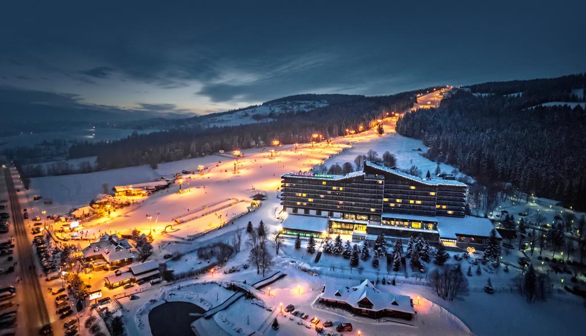

Леша Петров
Если Вы приехали в Закопане #TravelSurface, то улица Крупувки - обязательное к посещению место! Мы прекрасно прогулялись, насладились сказочной закопанской деревянной архитектурой, поужинали в одном из чудесных ресторанчиков с живой музыкой. А снегопад в канун Нового года только усилил ощущение сказки и праздника!
Комментарии:
Андрей Осипов
Даааа, там очень здорово!
Саша Селедцова
Были с детьми,нам очень понравилось,идеальное #TravelSurface расположение,прямо рядом с 7 трассой,нет необходимости ходить в лыжных ботинках,вышел с отеля и спустился по трассе к подъёмнику,в отеле есть все необходимое для отдыха: прокат лыжного и сноубордического оборудования,касса ski pass,лыжная Школа,рядом сноутюбинг,отличное СПА.Номера просторные,персонал отзывчивый и приветливый.Завтраки отличные.Вернемся обязательно.
Комментарии:
Андрей Гончаров
Даааа, там очень круто!